Design an RLC series band-pass (BP) filter with the available components R, L
and C in the lab so that the passing band is centered around 7.5 kHz and bandwidth
is about 1.3 kHz. Derive its frequency response function (FRF)  , and use
Matlab to generate a linear plot of its magnitude as a function of frequency (from
0 to 20 kHz), also make a Bode plot (from 0 to 100 kHz) using your own code. Feed
a sinusoidal signal
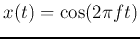 as the input to the filter and find the
gain at a set of discrete frequencies including the resonant frequency (e.g.,
, and use
Matlab to generate a linear plot of its magnitude as a function of frequency (from
0 to 20 kHz), also make a Bode plot (from 0 to 100 kHz) using your own code. Feed
a sinusoidal signal
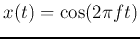 as the input to the filter and find the
gain at a set of discrete frequencies including the resonant frequency (e.g.,
 ). Compare your results with your analysis and simulation.
). Compare your results with your analysis and simulation.
Solution: Use 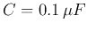, 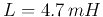 with internal resistance
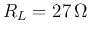, and 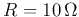,
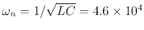,
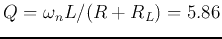,
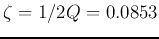,
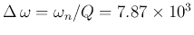,
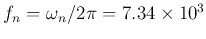,
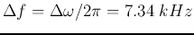.
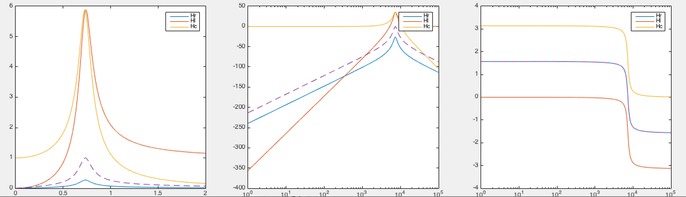